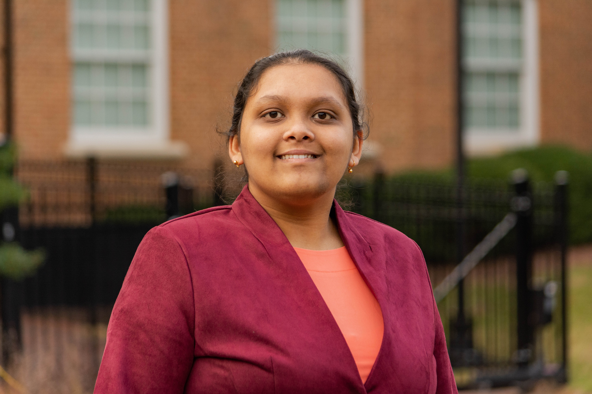
I’m a high school student based in Cary, NC, who loves diving deep into how things work
-whether that's Mathematics, Science, or Technology.
I've always been driven by an intense curiosity. That spark has led me to some incredible
experiences,
like scoring the highest PSAT in my middle school, winning eight Science Olympiad medals,
and building original applications with Python.
But for me, the best part of learning something is sharing it.
I love volunteering my time to coach junior STEM teams and tutor peers in math.
When I’m away from my studies, I’m usually channeling my energy into reading books or engaging in
creative arts or activities.
I've spent the last 12 years training in classical Indian dance (Bharatanatyam),
which culminated in my solo debut performance (Arangetram), and
I also hold a Junior Black Belt in Tae Kwon Do.
I’m always looking for new projects to build and fun design challenges to tackle!
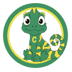
Carpenter Elementary School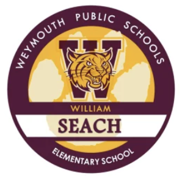
William Seach Primary School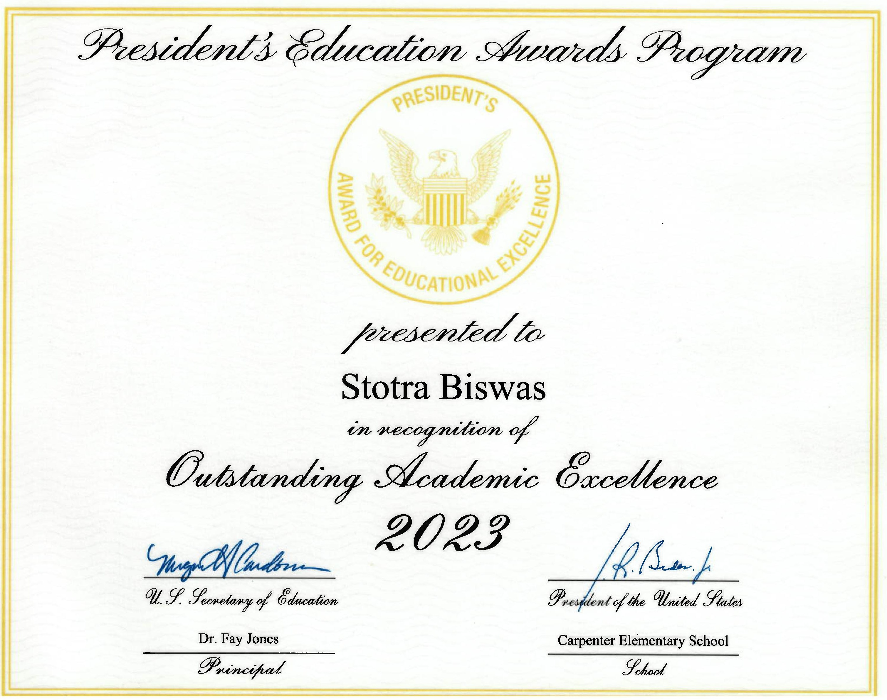
Presidential Award for Mathematics
Presidential Award for Science
Presidential Award for English
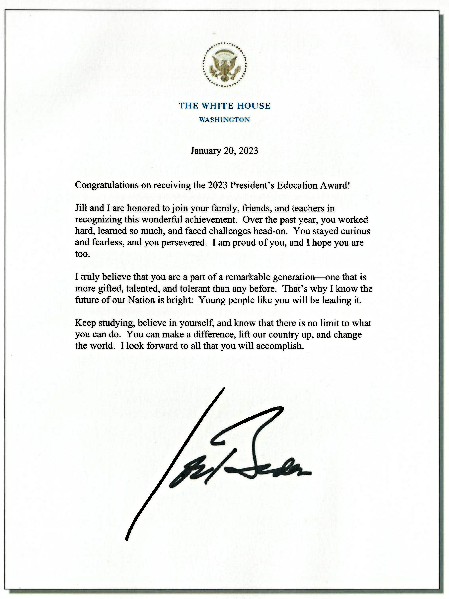
Presidents Letter of Recognition
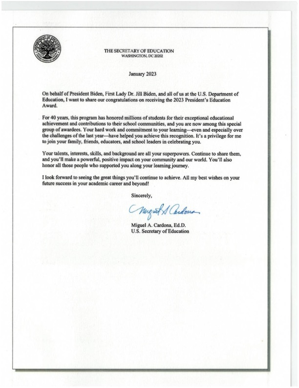
Letter from the US Secretary of Education
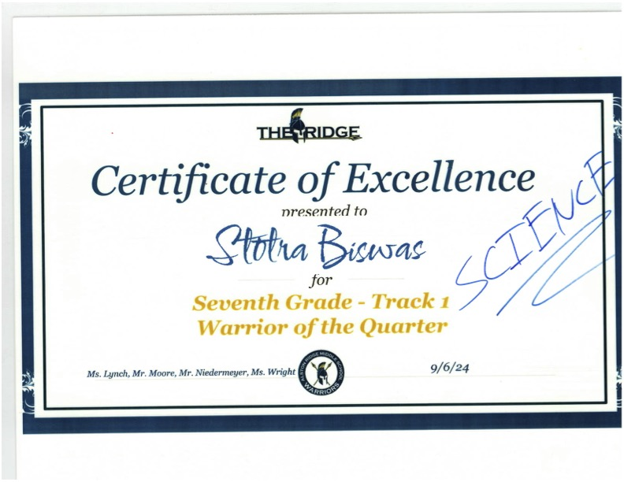
Warriour Of the Quarter
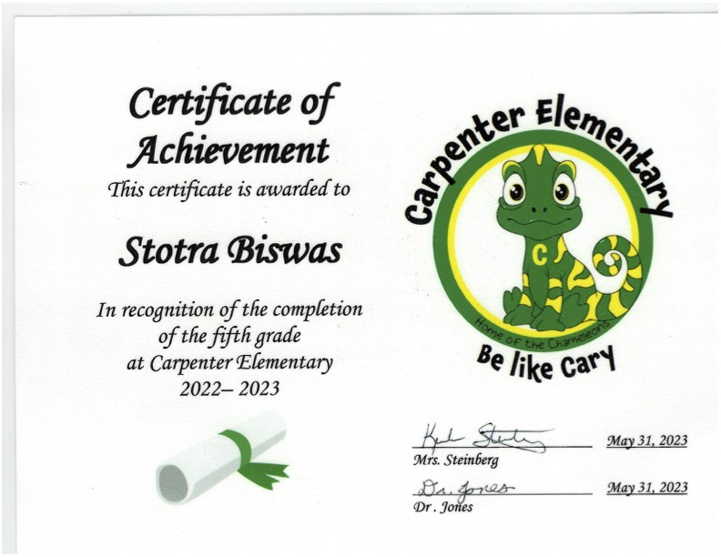
Elementary Certificate
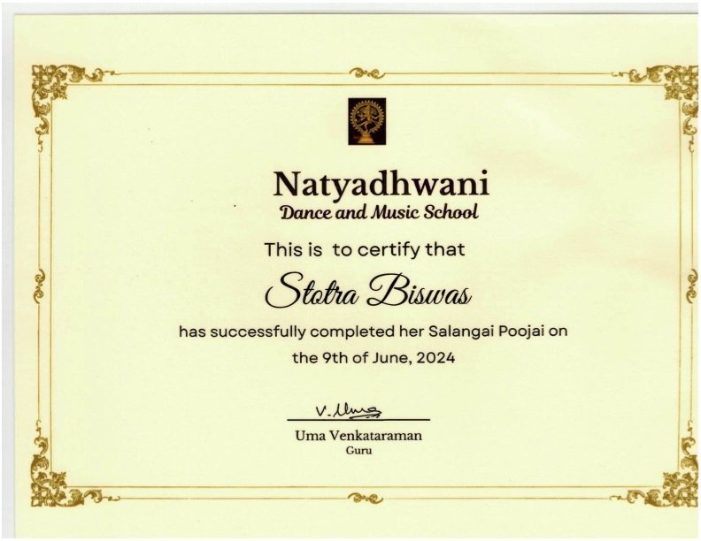
Salangai Poojai (Bharat Natyam Dance)
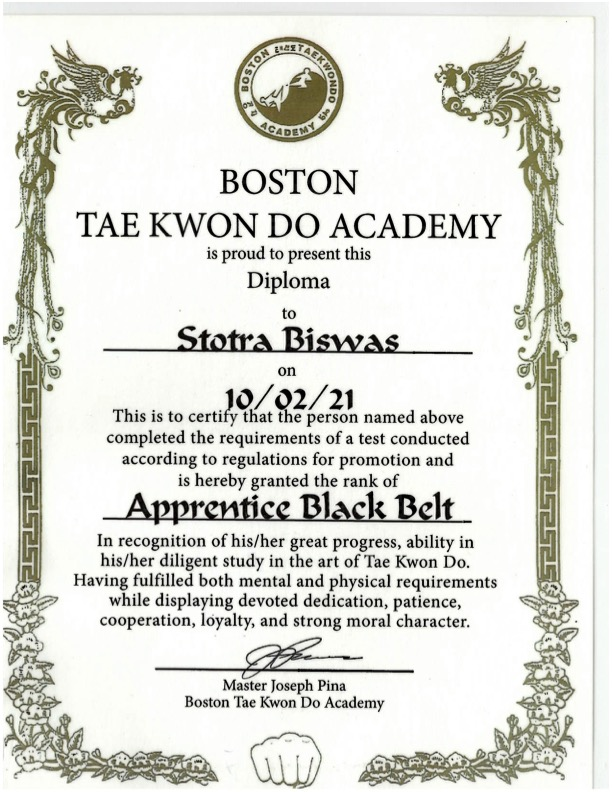
Tae Kwon Do Black Belt
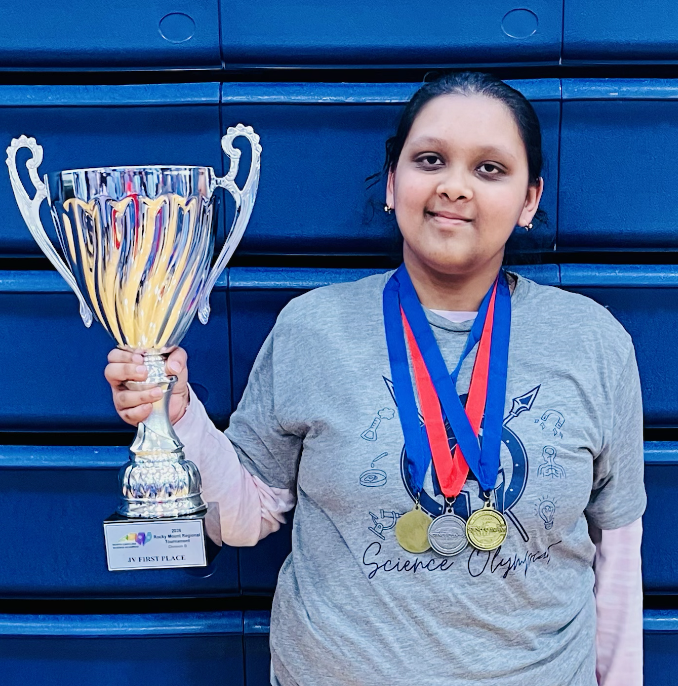
I received two gold medals in Codebuster and Machines during the regional tournament at North Carolina Wesleyan University, and one silver medals in Crimebusters. My team also won the first place overall for JV.
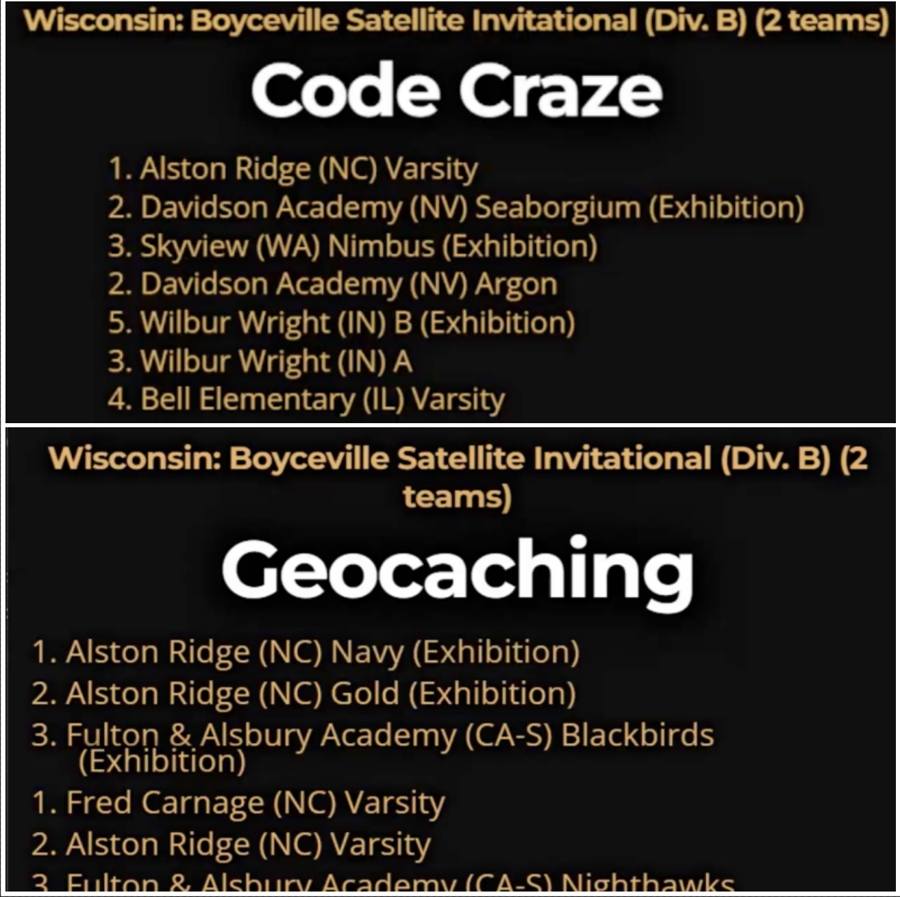
I received 2 medals during the Boyceville Invitational Science Olympiad Tournament. I got one gold medal in Code Craze and one silver medal in Virtual Geocahers.
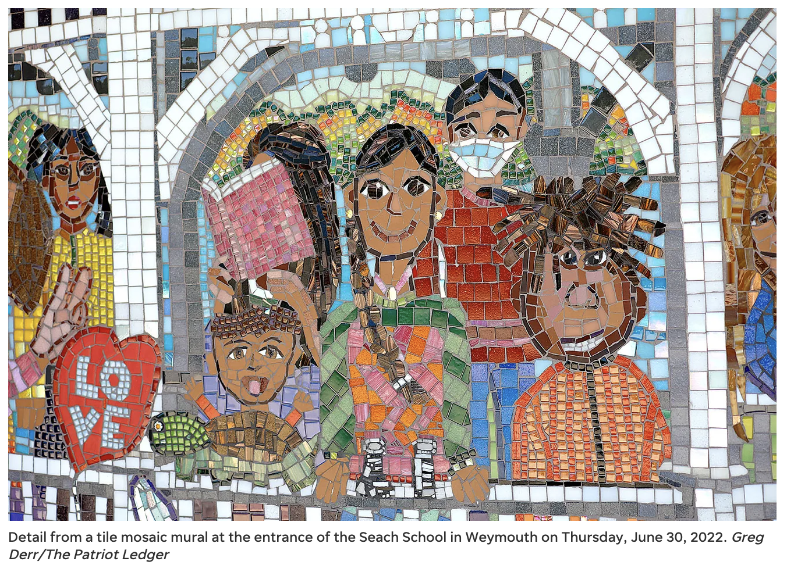
Artwork created by students at Seach School in Weymouth, Massachusetts, to celebrate their uniqueness and diversity. The murals were designed and painted by the students themselves, with guidance from Artist David Fichter. I drew a self portrait in grade 4, which was selected to be the center and main highlight of the mural. Later, over the next few weeks I handcrafted the mural using bright contrasting colors. The murals were unveiled in a ceremony attended by students, parents, and community members.
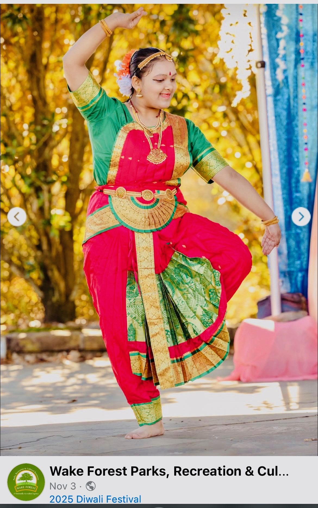
The Wake Forest Parks, Recreation & Cultural Resources Department hosted its third annual Diwali Festival on Saturday, Oct. 3, from noon-3 p.m. at E. Carroll Joyner Park.